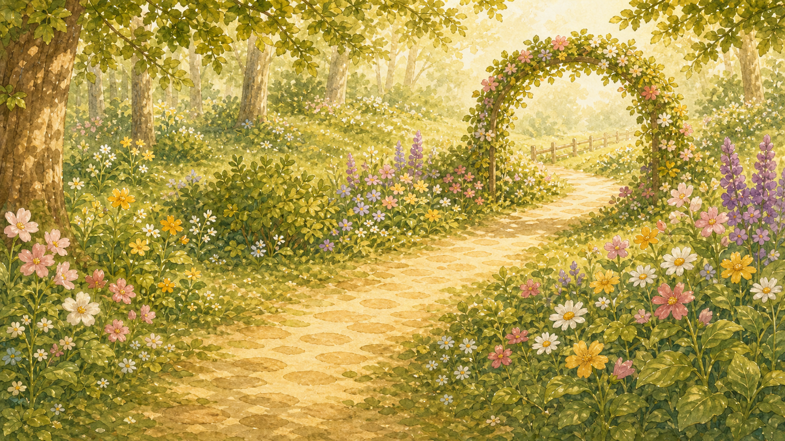
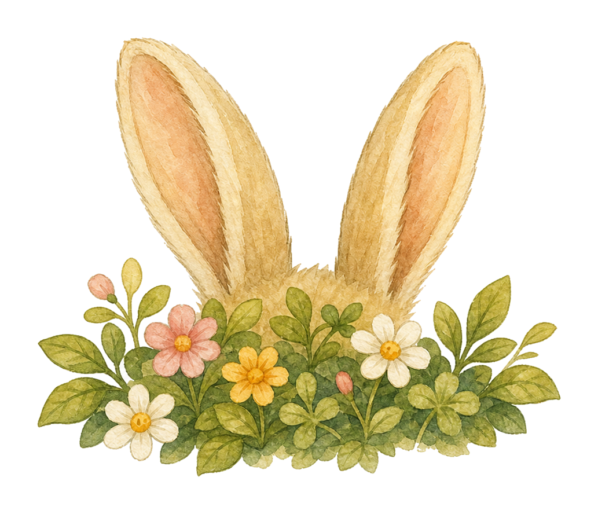
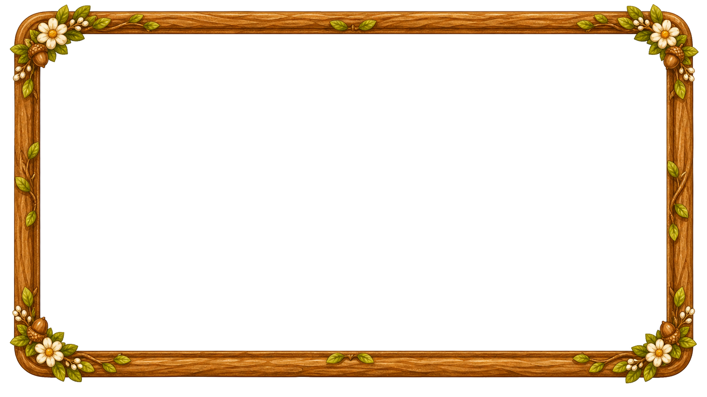

タップ判定エリア

ヒントを ヒントに さがしてみよう！



?edit=1 を付けると編集モード。💾 で saved-layout.json に保存。../../../assets/... から参照。.field-bg の width / height.hotspot の {x, y, w, h} = (px ÷ field-bg.width, ÷ field-bg.height, ÷ field-bg.width, ÷ field-bg.height).hidden-part の {x, y, w} = (px ÷ field-bg.width, ÷ field-bg.height, ÷ field-bg.width).field-bg の寸法 (既定 1100×620) を変更した場合は、寸法を再確認すること。.window-frame は装飾レイヤーで、.field-bg と独立して動かせる。